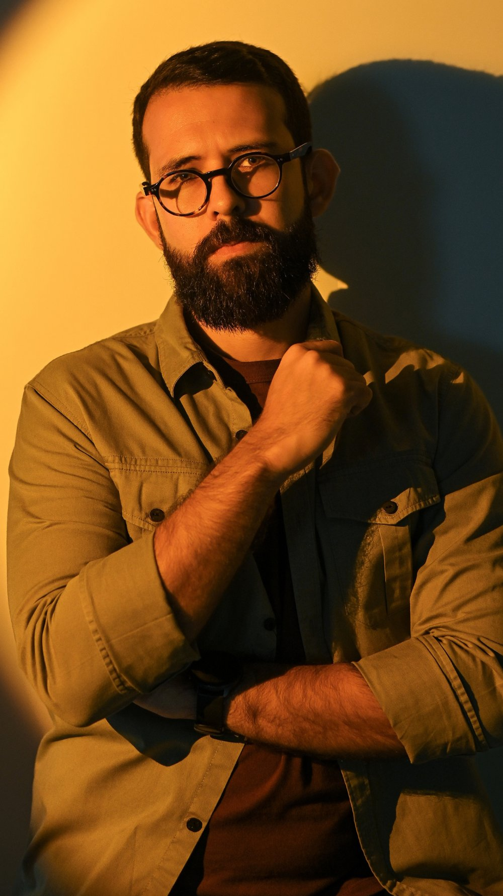
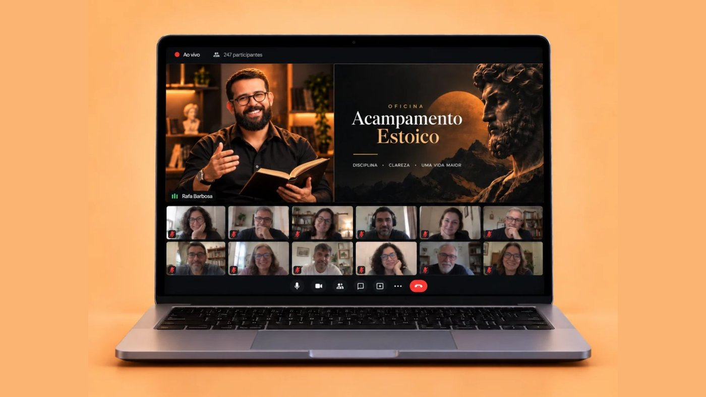
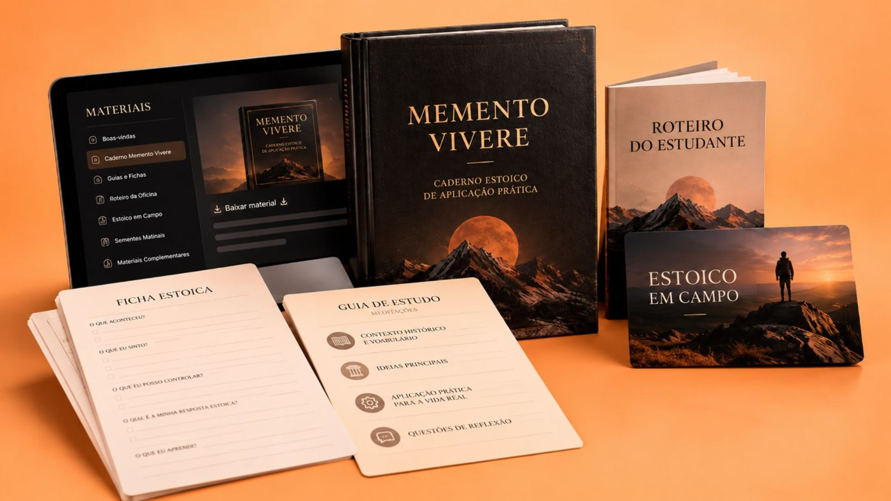
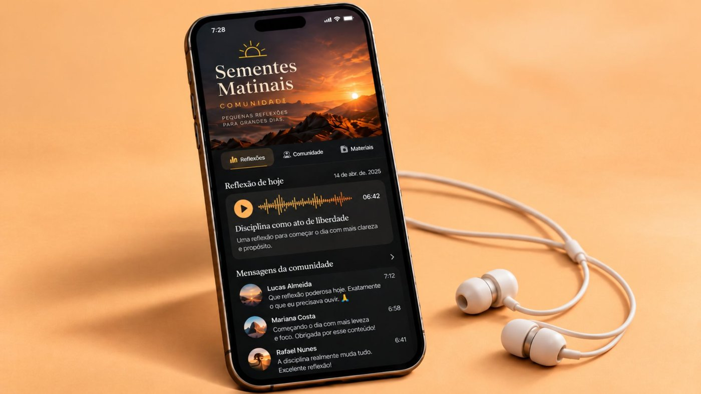
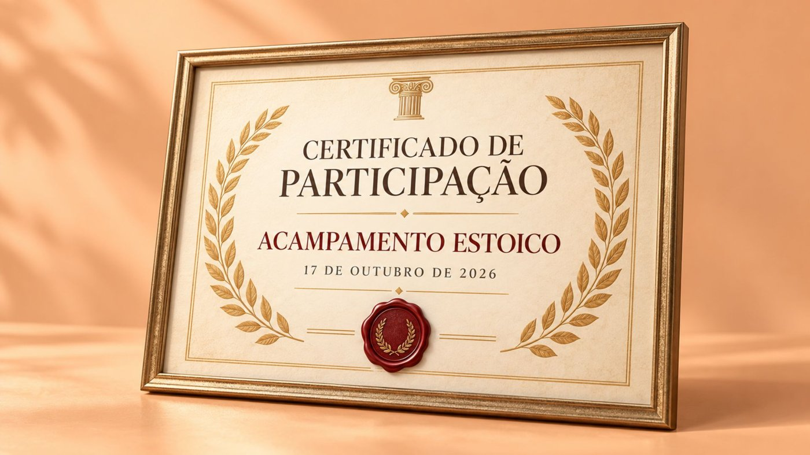
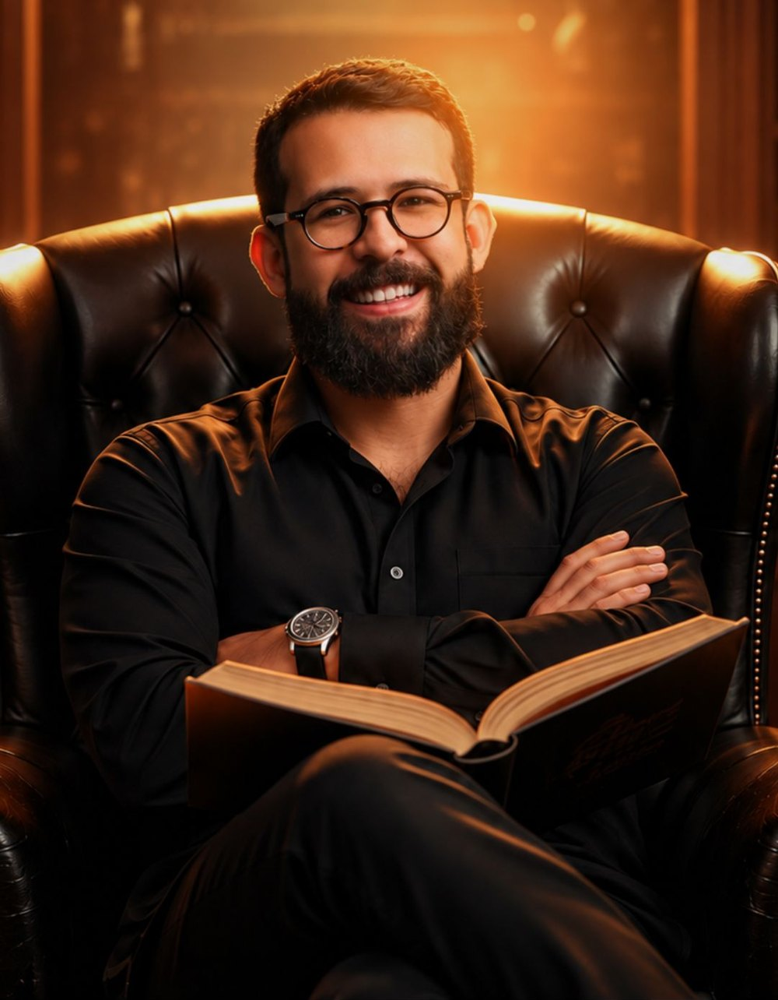

01 · Local
Google Meet
O link será enviado com antecedência no Grupo de Alunos. Tudo pronto para você participar!
Em apenas um sábado, você domina os princípios estoicos que já transformaram 3 mil alunos, sem precisar ler pilhas de livros ou maratonar vídeos soltos.
Salva frases inspiradoras, mas não sabe explicar a real profundidade delas.
Comprou livros, leu 10 páginas e largou porque não os entendeu com segurança.
Maratona vídeos no YouTube e, no fundo, sente que não assimilou nada novo.
Gastou com curso cheio de teoria, terminou e continuou sem saber usar na prática.
Se interessa por assuntos importantes, mas não consegue ligar uma ideia na outra.
Sente que precisaria de uma faculdade de filosofia para entender o básico.
Está viciado em "acumular conteúdo", sem seguir um método estruturado.
Não sabe diferenciar conhecimento com embasamento de conteúdos criados pelo achismo de YouTubers.
Começou por livros famosos, sem a base para entender o contexto completo de quem os escreveu.
Cinco minutos aqui, um vídeo ali, e sente que nunca tem tempo de verdade para fechar o raciocínio.
E é justamente por isso que você precisa participar da Oficina Acampamento Estoico!

Você não precisa de mais dicas genéricas e conteúdos fragmentados.
Você precisa de clareza e estruturas aplicáveis que funcionem no mundo real.
Como, quando e onde surgiu a filosofia que, por mais de 2mil anos, continua nos preparando a superar nossos limites interiores.
Quem foram Zenão, Crisipo, Sêneca, Epicteto e Marco Aurélio e como eles nos ensinam a arte de viver melhor.
As principais interpretações equivocadas sobre como enfrentar os desafios da vida com serenidade e resliência.
Compreenda as virtudes estoicas e como esses princípios podem trazer mais clareza, liberdade e equilíbrio às suas decisões.
Aprenda os exercícios milenares para lidar melhor com preocupações, emoções difíceis e situações que fogem do seu controle.
Descubra por onde começar, quais livros ler e como construir uma jornada de estudos que continue enriquecendo sua vida.

Uma experiência intensiva para conhecer o estoicismo de forma completa, organizada e descomplicada.

Um arsenal completo de materiais para aproveitar cada momento da oficina e continuar utilizando muito além dela.

Receba reflexões todas as manhãs para cultivar uma mente mais tranquila, consciente e preparada para a vida.
Plataforma com dezenas da horas de conteúdo sobre Estoicismo, Filosofia e Evolução Pessoal.

Enriqueça seu currículo ou guarde uma lembrança de um sábado dedicado ao seu crescimento pessoal.
Simplesmente tudo que eu precisava ouvir! Nunca pensei que na fase em que me encontro - recém divorciada após 17 anos de casamento, 2 filhos - eu encontraria as respostas para tantas perguntas e também um alívio para algumas dores! Gratidão Rafa! Sigo acreditando que devemos continuar confiando em Deus, mesmo nas adversidades, pois ali tb Ele nos conduz, nos guia e nos faz mais fortes. Quero continuar seguindo junto com vc!
Muito agradecida professor, essa aula é o ensinamento que precisava, para prosseguir e como agir com uma questão que ruminei ontem de forma inútil, pois não haverá mudança ...
Foi uma experiência incrível! Quanto tempo perdemos quando queremos controlar o que não podemos!
Nossa! Nunca ouvi e vi nada tão impactante! Já há algum tempo comecei a me interessar pelo Estoicismo, assisto vídeos nos canais de Filosofia, coleciono frases.... mas esta aula foi demais! Identifiquei-me totalmente com os ensinamentos desse imperador tão sábio. Obrigada por nos oferecer um conteúdo tão rico e transformador. Seguirei meus estudos.
Uma aula muito esclarecedora porque nos tira de uma realidade automática e nos devolve a vida com todas as suas reflexões e nos permite realmente sentir um despertar ainda que meio sem noção mas que já nos leva para um novo caminho. O QUE ME DESPERTA PARA A VIDA: será algo para mastigar, sentir o sabor.
Gostei demais do jeito didático e simples "traduzir" as Meditações de Marco Aurélio! Vc consegue dar nomes em tantas coisas que compartilho mas ainda não sabia nomear. Agora eu sei!
Evento Maravilhoso Amei ❤️ muito Sábio Marco Aurélio. Nós deixou um grande e valioso tesouro, seus pensamentos e reflexões., Obrigada professor por compartilhar conosco. 👏👏👏
Muito interessante, estou em um momento de reflexão em minha vida, irei assistir novamente para começar a fazer mudanças em minha vida. Muito obrigado
Descubra como se preparar para este sábado especial.
O link será enviado com antecedência no Grupo de Alunos. Tudo pronto para você participar!
Prepare seu café, escolha um lugar confortável e viva um sábado inesquecível.
Faça perguntas, tire suas dúvidas e participe ativamente da oficina, em tempo real.
Teremos 15 minutos de intervalo em cada turno para descansar e renovar as energias.
Das 12h30 às 14h, aproveite para almoçar tranquilamente e voltar com tudo.
O acampamento encerra com você dando início a uma nova forma de viver.
arraste para os lados
O ingresso para dominar o Estoicismo, do básico ao avançado.
A oficina completa + materiais exclusivos para ir além do sábado.

Filósofo (com pós-graduação na área), Professor e Palestrante, Rafa Barbosa é reconhecido como a Nova Voz da Filosofia no Brasil por traduzir conceitos complexos em reflexões de tirar o fôlego.
Rafa é fundador da Escola Natureza Filosófica e suas palestras já impactaram mais de 100.000 pessoas em todo o mundo.
Se você já perdeu horas no YouTube, livros pela metade e podcasts que esquece rapidamente, o jovem filósofo defende que o problema não é você.
O problema é que ninguém te ensinou filosofia da forma certa. Por isso, seu novo professor te convida para uma experiência ao vivo, acolhedora e que irá marcar sua história de vida.
Aceita esse convite?
O evento é online e ao vivo, pelo Google Meet, no sábado, dia 17 de outubro, a partir das 09h, com intervalos programados e pausa para o almoço. O link de acesso é enviado com antecedência no Grupo de Alunos.
Você receberá um e-mail automático de confirmação da sua inscrição, com o link para entrar no Grupo de Alunos. O acesso à sala da oficina será enviado somente lá. Fique atento à sua caixa de entrada e ao spam.
Os dois dão acesso à oficina ao vivo, aos materiais complementares, à comunidade Sementes Matinais, ao Filoverso e ao certificado de participação.
O VIP inclui ainda a gravação da palestra “As 4 Situações Que Mais Desequilibram Sua Mente”, o minicurso “O Essencial da Filosofia” e a aula sobre “A Arte de Viver”, de Epicteto.
Não. Aliás, é melhor se você nunca estudou.
A oficina vai do básico ao avançado e começa do zero. Você não precisa desaprender os vícios do conteúdo raso que todo mundo consome: aqui você aprende o Estoicismo do jeito certo desde o primeiro passo.
Não. Nós não disponibilizamos nem vendemos a gravação da oficina. Essa metodologia foi pensada para eliminar a procrastinação. Para ter resultados reais e aplicar as ferramentas, você precisa estar ao vivo com a gente.
A sua participação em vídeo ou áudio não é obrigatória em nenhum momento. Você fará os exercícios de forma individual. O chat estará aberto para dúvidas e você só interage se quiser. O foco é a sua paz, sem exigir exposição indesejada.
Sim. Você pode solicitar o cancelamento até 48h depois da realização do evento.
Se você não conseguir participar ao vivo ou se não gostar, nós devolvemos o seu dinheiro. Nossa equipe fará o reembolso integral do valor de forma rápida e sem burocracia.
Garanta o seu ingresso e viva um sábado inesquecível, ao vivo, com a filosofia estoica.
Garantir meu ingresso